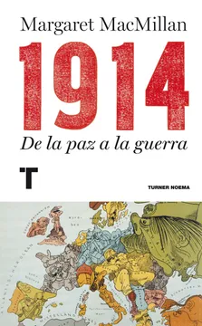
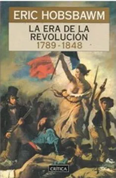
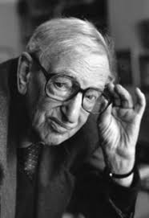

Libros del mes

1914
Margaret MacMillan da una clase magistral acerca de las responsabilidades de los líderes políticos en el inicio de la Primera Guerra Mundial
Algo Va Mal
La crisis del estado de bienestar, la crisis climática y otros temas son analizados por el historiador inglés Tony Judt.


La Era de la Revolución
Este libro es el primer volumen de una de las obras más importantes de la historiografía contemporánea y una clave para entender el siglo XIX. Eric Hobsbawm en todo su esplendor.